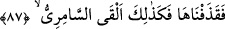

ümmetinin arasına döndü.
Mûsâ (a.s.) onların yaptıklarına çok üzülmüştü. Ya da kavmine yaptıklarından ötürü
çok kızmıştı. Nitekim Nebi (a.s.)’ın ânî ölüm hakkında söylediği “O, mü’minler için bir
rahmet, kâfirler için ise öfke ile yakalayıştır.”[94] hadisinde de “ kelimesi
“kızgınlık” anlamındadır. İmam Râğıb der ki: “ , hem hüzün hem kızgınlıktır.
, hem hüzün hem kızgınlıktır.
Bâzen bunlardan sadece birini ifade etmek için de kullanılır.
Kâşifî der ki: “Mûsâ (a.s.) kavminin arasına ulaşınca onların seslerini ve
gürültülerini işitti. Buzağının etrafından def çalıyor ve raks edip oynuyorlardı. Mûsâ
(a.s.) onları ayıplayarak azarlamaya başladı:”
“Ey kavmim! Rabbiniz size güzel bir vaadde bulunmamış mıydı?” Size içinde nur ve
hidâyet olan Tevrat’ı vereceğini vaad etmemiş miydi? Yâni O size inkâr etmeniz
mümkün olmayan dosdoğru bir vaadde bulunmuştu.
Bahru’l-ulûm’da şöyle der: “güzel bir vaadde” yâni güzelliğin en sonunda demektir.
Çünkü Allah Teâlâ onlara içinde hidâyet ve nur olan Tevrat’ı vereceğini vaad etmişti.
Bundan daha iyi ve güzel bir vaad yoktur.”
Burada işâret vardır ki Allah Teâlâ bir kavme bir vaadde bulundu mu mutlaka vaadini
yerine getirir. Ancak bu vaadi yerine getirme, o kavim için bir fitne ve imtihan da
olabilir. Nitekim Mûsâ (a.s.)’ın kavmi için böyle olmuştur. Allah onlara Tevrat’ı
vereceğini, Mûsâ (a.s.) ile Tur dağında konuşacağını ve İsrailoğulları’ndan yetmiş
kişinin seçileceğini vaad etmişti. Allah, İsrailoğulları’na olan vaadlerini yerine
getirince bundan onlar için fitne ve imtihan meydana geldi. Bu da dalâlete düşmeleri ve
buzağıya tapmalarıdır. Fakat vaad “güzel” olarak vasfedildiği için ‘güzel vaad’e bağlı
olarak gelen belâ ve imtihan da ‘güzel bir imtihan’ oldu. Sonunda tevbe ettiler, kurtuluşa
erdiler ve yüksek derecelere ulaştılar.
“Şu halde size zaman mı çok uzun geldi,” yâni, Allah size bunları vermeyi vaad etti
de vaadlerin gerçekleşmesi gecikti ve bu sebepten mi hatâ ettiniz?
el-Celâleyn’de şöyle denilmiştir: “Benim sizden ayrılık müddetim uzun mu geldi?”
“Yoksa” aptallık ve ahmaklıkta mesel olan bir şeye ibâdet sebebiyle “üstünüze
Rabbinizin” mutlak olarak işlerinizin mâlikinin “gadabının” büyük bir azabın ve
şiddetli bir intikamın “inmesini mi istediniz ki,” mîkattan dönünceye kadar verdiğim
emirlere uyacağınıza dair “bana olan vaadinizden döndünüz?” “dedi.” Sanki burada
şöyle denilmiştir: “Zamanın uzun olmasından ötürü verdiğiniz sözü unuttunuz da
yanlışlıkla sözünüze muhalefet mi ettiniz? Yoksa siz üstünüze Rabb’inizin gadabı insin
diye kasden ve bilerek mi verdiğiniz sözden döndünüz?”